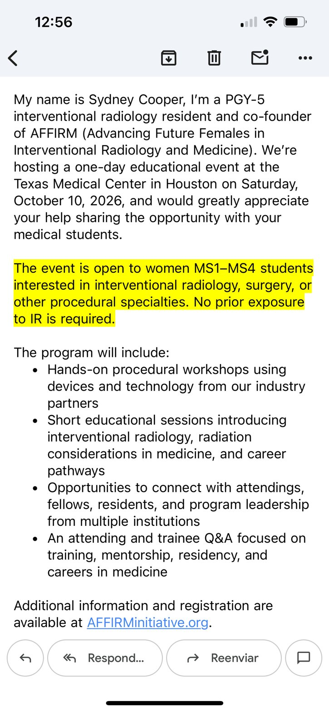

AFFIRM: Interventional Radiology Educational Day for Women Medical Students
RSVP
Career / specialty
When
Saturday, October 10 · All day
Where
Texas Medical Center, Houston, TX Map
Host
AFFIRM (Advancing Future Females in Interventional Radiology and Medicine) · posted in BCM '30
Details
One-day event hosted by AFFIRM (Advancing Future Females in Interventional Radiology and Medicine), co-founded by PGY-5 IR resident Sydney Cooper. Includes hands-on procedural workshops with industry partner devices, short sessions on IR, radiation considerations and career pathways, networking with attendings/fellows/residents/program leadership, and an attending and trainee Q&A.
RSVP
Requested · no deadline given
· link
Registration and additional information at AFFIRMinitiative.org. Open to women MS1-MS4 students interested in interventional radiology, surgery, or other procedural specialties; no prior IR exposure required.
Announcement
BCM '30 · Sep 18
passing on for a friend from dell!